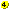

25 February 2004
Third place at the Porto de Mós LAN party ZP Unreal Tournament iCTF 5on5
-> Screenshot n/a <-
-----------------------------------------------------------

25 March 2005
First Place in Portuguese Ladder ZP Unreal Tournament iCTF 2on2
-> Screenshot here <-
-----------------------------------------------------------
09 July 2006
Second Place in Portuguese Ladder of Medal of Honor Objective realism
-> Screenshot here <-
-----------------------------------------------------------
01 March 2007
First Place in Europe Ladder of Unreal Tournament iCTF 5on5 Zero Ping
-> Screenshot here <-
-----------------------------------------------------------
16 September 2007
Winner of Loures XL Party LAN of Unreal Tournament iCTF 5on5
-> Screenshot n/a <-
-----------------------------------------------------------
23 May 2013
First Place in World League Champions Series Master Ladder of Black Ops II
-> Screenshot here <-
-----------------------------------------------------------

13 June 2013
Fourth place in the European Ranking of Arctic Combat
-> Screenshot here <
-----------------------------------------------------------
|